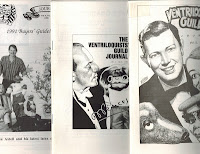
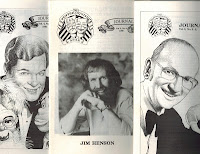
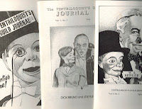

Rare Sale!
4/24/2012
This week I’m offering you a very rare opportunity to purchase a set of twelve different original mint condition copies of The Ventriloquist’s Guild Journal.
This set of twelve different original mint condition copies of The Ventriloquist’s Guild Journal may be the complete set of all that were published (I don't know if any followed the issue with Dick Weston on the cover). The booklets in this set are as follows:
Vol. 1 No. 1 Spring 1986 W.S. Berger cover (Nelson art), 32 pages
Vol. 1 No. 2 1986 Dick Bruno cover (Nelson art) 28 pages
Vol. 1 No. 3-4 1987 Stu Scott cover (Nelson art) 44 pages
Vol. 2 No. 1 Fall 1987 Charlie McCarthy cover (Nelson art) 32 pages
Vol. 2. No. 2 BUYER’S GUIDE Cover: Figures by Arvities, Selberg, Nelson-Jackson, and Axtell Nelson art) 32 pages
Vol. 2 No. 3 1989 Jimmy Nelson cover (Nelson art) 32 pages
Vol. 3 No. 1 Fall 1989 Jay Johnson cover (photo) 32 pages
Vol. 3 No. 2-3 1990 Jay Marshall cover (Nelson art) 44 pages
Vol. 3 No. 4 1990 Jim Henson cover (photo) 32 pages
Vol. 4 No. 1 1991 Dick Weston cover (Nelson art) 32 Pages
Vol. 4 No. 2 1990 BUYER’S GUIDE 1991 Steve Axtell cover (photo) 32 pages
All for sale as one set on eBay auction:
http://cgi.ebay.com/ws/eBayISAPI.dll?ViewItem&item=290700825560
{kind=link}

The Ventriloquist’s Guild Journal was published periodically for a period of about five years by ventriloquist and historian, John Arvities. With most featuring the amazing art of Bill Nelson, and their many pages packed with rare photos and detailed current and historical information, this ventriloquist publication definitely stands alone among other works in its field.This set of twelve different original mint condition copies of The Ventriloquist’s Guild Journal may be the complete set of all that were published (I don't know if any followed the issue with Dick Weston on the cover). The booklets in this set are as follows:
{kind=link}
{kind=link}

Vol. 1 No. 1 Spring 1986 W.S. Berger cover (Nelson art), 32 pages
Vol. 1 No. 2 1986 Dick Bruno cover (Nelson art) 28 pages
Vol. 1 No. 3-4 1987 Stu Scott cover (Nelson art) 44 pages
Vol. 2 No. 1 Fall 1987 Charlie McCarthy cover (Nelson art) 32 pages
Vol. 2. No. 2 BUYER’S GUIDE Cover: Figures by Arvities, Selberg, Nelson-Jackson, and Axtell Nelson art) 32 pages
Vol. 2 No. 3 1989 Jimmy Nelson cover (Nelson art) 32 pages
{kind=link}

Vol. 2 No. 4 1989 Senor Wences cover (Nelson art) 28 pagesVol. 3 No. 1 Fall 1989 Jay Johnson cover (photo) 32 pages
Vol. 3 No. 2-3 1990 Jay Marshall cover (Nelson art) 44 pages
Vol. 3 No. 4 1990 Jim Henson cover (photo) 32 pages
Vol. 4 No. 1 1991 Dick Weston cover (Nelson art) 32 Pages
Vol. 4 No. 2 1990 BUYER’S GUIDE 1991 Steve Axtell cover (photo) 32 pages
All for sale as one set on eBay auction:
http://cgi.ebay.com/ws/eBayISAPI.dll?ViewItem&item=290700825560